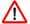

De: La Frikipedia, la enciclopedia extremadamente seria.
De: La Frikipedia, la enciclopedia extremadamente seria. De: La Frikipedia, la enciclopedia extremadamente seria.
|  | Este artículo contiene exceso de lenguaje obsceno, por lo que se ha aplicado el censor absurdo de forma automágica. Para evitar este censor es necesario rebajar el nivel de juramentos del artículo editándolo. |
Esta plantilla es automática, no es necesario incluírla.
Autor(es):